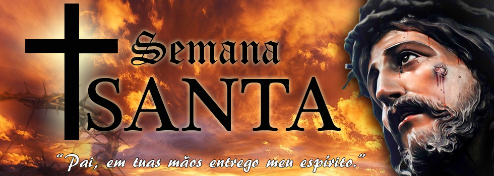

Semana Santa

El Jueves Santo celebra la última cena de Jesús de Nazaret con sus discípulos, la institución de la eucaristía, la orden sacerdotal y, el lavatorio de pies. En este día, los católicos realizan la visita de los siete templos o iglesias, con el objetivo de agradecer a Dios el don de la eucaristía y sacerdocio.

El Viernes Santo, recuerda la Pasión de Cristo, momento de su crucifixión en el Calvario, por salvar al hombre del pecado y darle vida entera. Se celebra con un viacrucis y con la adoración de la Cruz.
Se conoce como Sábado Santo el día entre la muerte y la resurrección de Jesús. En este día, se lleva a cabo una vigilia pascual, en la cual se acostumbra bendecir el agua y encender las velas en señal de la Resurrección de Jesús.

El Domingo Santo, conocido como Domingo de Pascua. En el Domingo Santo, se conmemora la resurrección de Jesucristo al tercer día después de su crucifixión y, su primera aparición a los discípulos. Este día es de suma alegría para los fieles y, es interpretado como la esperanza de una nueva vida.